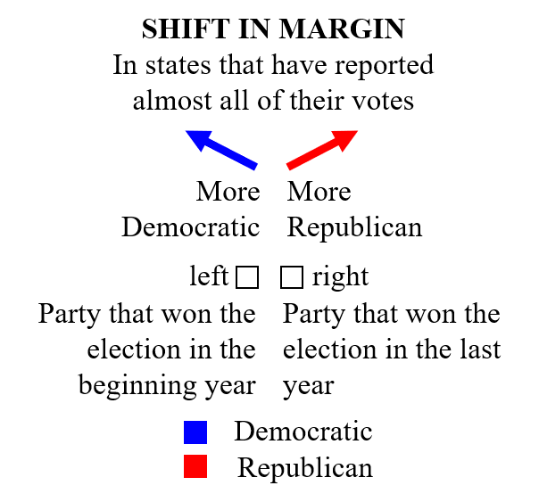

Yet Another US Election Vis
by Junran Yang, Guangan Chen, Dang Mai
Control Pane
Symbol Data
Regional Data
Selected States
Present each state of each periods as one data point, which brings more comparison.
Map Visualization
Select states by
